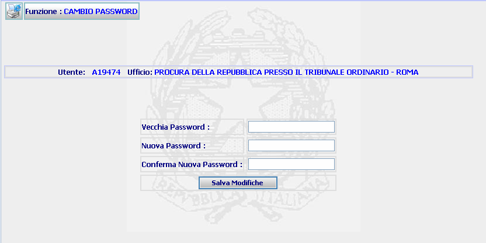
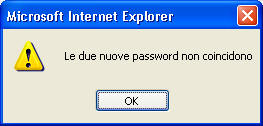
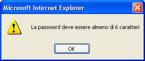

Modificare la password:
La prima volta che si esegue il Login o successivamente, tramite la funzione Cambio Password posizionata nell'Area di navigazione, il Sistema offre la possibilità di modificare la password assegnata d’ufficio.
LE MASCHERE VIDEO

COME FARE PER ...
|
Modificare la password: |
Per modificare la password occorre digitare la vecchia password nel campo “vecchia password” e due volte quella nuova nei campi “nuova password” e “conferma nuova password”.
N.B. entrambi i campi descritti sono sensibili alle lettere maiuscole e ad eventuali spazi vuoti, pertanto occorre prestare attenzione nella fase inserimento.
Una volta compilati i campi richiesti, cliccare sul bottone: sarà effettuato un controllo sui dati inseriti e, se sono stati digitati correttamente, il Sistema assegnerà la nuova password da utilizzare per gli accessi futuri.
CAMPI
I campi necessari ad effettuare il cambio password sono i seguenti:
| NOME | DESCRIZIONE |
| Vecchia Password | Compilare il campo con la propria password |
| Nuova Password | Compilare il campo con una stringa di almeno 6 caratteri alfanumerici. |
| Conferma Nuova Password | Compilare il campo con la nuova password |
BOTTONI
|
COMANDI |
DESCRIZIONE |
|
|
A fronte di tale comando, il sistema dopo aver verificato la validità dei dati specificati, assegnerà la nuova password da utilizzare per gli accessi futuri. |
CONTROLLI
|
A fronte della pressione del bottone sarà effettuato un controllo sui dati inseriti e, se sono stati digitati correttamente, il Sistema assegnerà la nuova password da utilizzare per gli accessi futuri. Gli errori possono essere i seguenti: |
oppure

oppure

Se il sistema invece non riscontrerà errori verrà visualizzata, a secondo di quale modulo applicativo di Sies stiamo usando, la PAGINA INIZIALE di SIEP, SIUS o dell'AMMINISTRAZIONE.